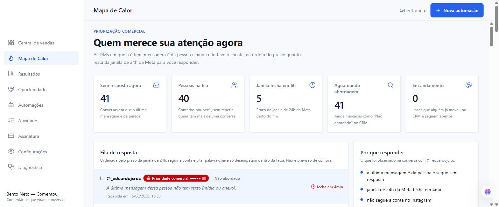
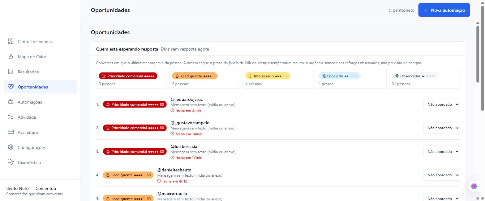
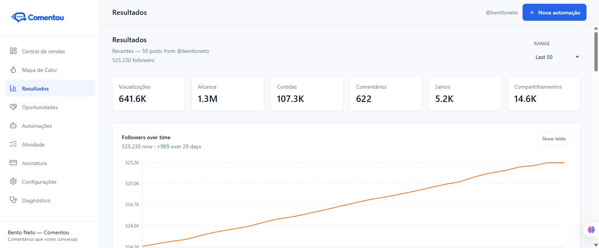

App 2603891586729781 · Instagram App ID 1427551009115339 · submissão 2604863673299239
manage_fundraisers, catalog_management, leads_retrieval, ads_management, pages_manage_ads, business_management, threads_basic, pages_messaging, pages_show_list, pages_read_engagement, pages_manage_metadata, ads_read, public_profile e Marketing API Access Tier.| Permissão | Por que o produto precisa | Manter? |
|---|---|---|
instagram_business_basic | Identificar a conta conectada e listar as publicações do próprio cliente. | Sim |
instagram_business_manage_messages | Ler as conversas de Direct e responder de dentro da plataforma. É o núcleo do produto. | Sim — falta adicionar |
instagram_business_manage_comments | Só se você for vender o gatilho “comentou → recebe DM”. Sem ela esse recurso não funciona. | Opcional |
| Todas as outras 13 | Não são usadas por nenhuma linha do código. | Remover |
instagram_manage_comments (que está na submissão) não é a mesma coisa que instagram_business_manage_comments. A primeira é do fluxo com Login do Facebook; o Comentou usa o fluxo com Login do Instagram. Se for pedir comentários, peça a versão business.Escritos em inglês de propósito: a fila de revisão é internacional. Cada um descreve o uso real, sem promessa que o código não cumpre.
Capturado agora em app.comentou.com.br com a conta @benttoneto conectada. São as telas que o revisor vai ver seguindo as instruções, e as que o screencast precisa mostrar.
41 conversas sem resposta, ordenadas pelo prazo da janela de 24h da Meta. Lida com instagram_business_manage_messages.

Mesma fonte, com posição numerada, faixa de temperatura e status de CRM por pessoa.

Posts da própria conta com curtidas e comentários. Lida com instagram_business_basic.

Campo “Instruções para o analista”. Sem credenciais válidas a submissão inteira é rejeitada.
Um vídeo por permissão. Motivo nº 1 de rejeição: não aparecer a tela de consentimento.
basic: abra Resultados e mostre os posts com curtidas e comentários.manage_messages: abra Oportunidades, mostre as conversas e envie uma resposta de verdade. Depois abra o Mapa de Calor e mostre a fila priorizada.| Etapa do formulário | Estado |
|---|---|
| Verificação | ✅ verde |
| Configurações do app | ✅ verde |
| Uso permitido | ✅ verde — as duas permissões descritas, screencast anexado, caixa de conformidade marcada |
| Tratamento de dados | ✅ verde — operador, controlador, país e as duas perguntas de autoridades públicas |
| Instruções para o analista | ⛔ bloqueada — o app não tem plataforma declarada |
https://app.comentou.com.br em Configurações do app → Básico → Adicionar plataforma. O cartão "Site" aparece, aceita a URL, e some depois de Salvar alterações, sem mensagem de erro — não fica salvo. O console não acusa erro de permissão.
| Ação | Estado |
|---|---|
| Remover as permissões extras do envio | ✅ 14 removidas (era 15 itens, incluindo manage_fundraisers, catalog_management, ads_management, Marketing API Access Tier) |
Adicionar instagram_business_manage_messages | ✅ adicionada — o envio agora tem exatamente as duas permissões que o código pede |
Descrição de instagram_business_basic | ✅ preenchida |
Descrição de instagram_business_manage_messages | ✅ 2.507 caracteres, com endpoints, finalidade, retenção e passo a passo de teste |
| Screencast | ✅ seu vídeo, recomprimido de 77 MB para 3,4 MB (limite de upload), 1600px/24fps |
| Operador de dados | ✅ The Constant Company, LLC (Vultr) — TI/nuvem — Estados Unidos |
| Controlador dos dados | ✅ Bento Neto Bento — Brasil |
| Plataforma "Site" | ⛔ não salva (acima) |
| Item | Estado |
|---|---|
| Publicar a política de privacidade corrigida | ⬜ você — commit f9c0ff6 já está no GitHub, falta o deploy no Dokploy (216.128.168.97:3000 pediu login; não digito senha) |
| Fluxo de OAuth no screencast | ⚠️ o vídeo mostra o painel inteiro mas não mostra a tela de consentimento do Instagram, que a Meta pede explicitamente. Uma regravação de 20s do "Conectar Instagram" até voltar ao painel resolve |
| Portfólio empresarial verificado | ⚠️ o app aparece sob "Ai football", não "BM - FIVE STARS" — conferir |
| URL da Política de Privacidade | ✅ https://app.comentou.com.br/privacy |
| URL dos Termos de Serviço | ✅ https://app.comentou.com.br/terms |
| URL de exclusão de dados | ✅ https://app.comentou.com.br/data-deletion |
| E-mail de contato | ✅ preenchido |
| Chamada de API bem-sucedida | ✅ a conta @benttoneto já está conectada e lendo dados |
| App publicado | ✅ status “Publicado” |
| Remover as permissões extras | ✅ feito (14) |
Adicionar instagram_business_manage_messages | ✅ feito |
| Screencast anexado | ✅ feito — ver ressalva do OAuth acima |
| Plataforma "Site" declarada | ⛔ não salva — é o único bloqueio |
| Ícone do app 1024×1024 | ⬜ verificar |
Hoje o app tem Standard Access: só contas com função de testador no app conseguem conectar. Por isso a sua conta precisou ser adicionada manualmente.
Com Advanced Access, qualquer conta profissional do Instagram conecta sozinha — que é o fluxo que você quer vender: o cliente cadastra, conecta, paga e usa, sem depender de você.
.ts e .tsx) por qualquer chamada de Marketing API — act_, adaccount, adcreative, ads_, insights/ads. Zero resultados. O app não faz nenhuma chamada de anúncios hoje.
ads_management, ads_read, business_management e boa parte das 13 permissões extras que estamos removendo da submissão). Pedir tier de uma API que o app não chama é exatamente o padrão de rejeição que estamos corrigindo — e uma rejeição aqui atrasa a aprovação do Instagram, que é a que destrava a venda.
Cole em inglês. É o campo principal do pedido de tier.
Comentou is a Brazilian SaaS that helps small businesses turn Instagram comments and direct messages into sales conversations. Our users are the advertisers themselves: each customer connects their own Instagram professional account and their own ad account. We never operate ads for accounts outside that explicit connection.
We use the Marketing API in READ-ONLY mode, for attribution and reporting. We do not create, edit, duplicate, pause, or spend on ads, and we do not expose any ad-creation surface to our users.
Endpoints we call:
1. GET /me/adaccounts — so the customer can pick which of their own ad accounts to link to their Comentou workspace.
2. GET /act_{ad_account_id}/ads and /adcreatives — to enumerate the creatives the advertiser is currently running, including dark posts, via effective_object_story_id and effective_instagram_media_id. This is the reason we need the Marketing API at all: comments and DMs generated by an unpublished ad creative never appear under the account's own media on the Instagram API, so today our users see the lead land in their inbox with no way to tell which campaign produced it.
3. GET /act_{ad_account_id}/insights at ad level, fields spend, impressions and actions — to attach a cost to the leads we already rank, so the customer can see cost per conversation started per campaign.
We read this data once per hour per connected account and store only the aggregate figures needed for the reports described above. We do not resell, share, or combine this data across customers.
Value to the advertiser: today a small business has two disconnected views. Ads Manager tells them what they spent; the Instagram inbox tells them who wrote. Comentou joins the two, so the person answering direct messages knows which conversations were paid for and which were organic, and spends Meta's 24-hour messaging window on the leads that actually cost money.
Business model: monthly subscription paid by the business that owns the account. We are not an ad network, a reseller, or an agency operating third-party ad accounts.
None. Our integration is read-only. We do not create or manage campaigns, ad sets, ads, creatives, audiences, or budgets. We read ads, ad creatives, and ad-level insights for attribution reporting only.
One ad account per paying customer, connected by the customer themselves. We expect fewer than 100 connected ad accounts in the first year. Call volume is roughly 4 requests per connected account per hour.
Development Tier's rate limit is applied per app, not per ad account, so it is consumed by the total number of connected customers rather than by how heavily any one customer uses the product. Our polling is deliberately light — about 4 calls per account per hour — but it scales linearly with customers, and Development Tier stops being sufficient well before our own capacity does. We are requesting the next tier to keep hourly attribution working as customers are onboarded, not to increase per-customer call frequency.
instagram_business_manage_messages → 3) gravar o screencast → 4) enviar só o Instagram. O Marketing API entra numa submissão separada, depois, com a integração construída.